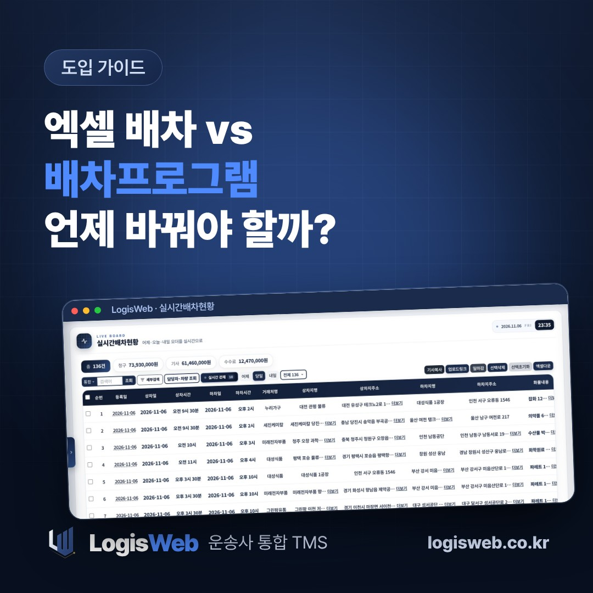

네이버 블로그 올리는 법 ① 제목 칸에 아래 제목 복사 ② 이 노란 상자 아래 본문을 드래그 → 복사 → 붙여넣기 ③ 그림 자리에 같은 폴더의 card-1~3.jpg 를 끌어다 놓기 ④ 태그 칸에 태그 붙여넣기 ⑤ 발행 제목: 엑셀 배차 vs 배차프로그램(TMS), 우리 회사는 언제 바꿔야 할까? 체크리스트 7가지 태그: #TMS #운송관리시스템 #배차프로그램 #엑셀배차 #운송사 #물류프로그램 #로지스웹
엑셀 배차 vs 배차프로그램(TMS), 우리 회사는 언제 바꿔야 할까? 체크리스트 7가지

엑셀 배차 vs 배차프로그램
처음엔 엑셀이 제일 편해요. 무료고, 다들 쓸 줄 알고요. 그런데 직원이 늘고 오더가 많아지면 엑셀이 일을 만들기 시작해요.